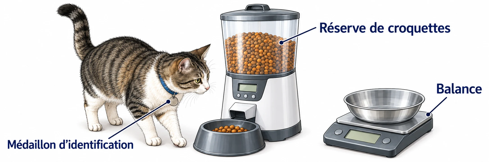

OBSERVER · EXPÉRIMENTER · EXPLIQUER
Adapter un distributeur de nourriture
Compare les distributeurs et observe des portions individuelles. Le moins cher n’est pas le seul critère.

✎ Garde ta feuille à côté de toi.Ordinateur : manipulations et mesures simulées. Papier : relevés, réponses, calculs et croquis. Matériel réel : essai complémentaire si disponible.
Des observations pour expliquer
- Q4–Q5 : calcule la réserve nécessaire puis justifie ton choix sur papier.
- Q7–Q8 : compare chaque portion aux limites et prépare un protocole.
Appuie ton explication sur une valeur, un changement observé ou une comparaison. Distingue ce que montre le modèle et ce qui reste à vérifier.